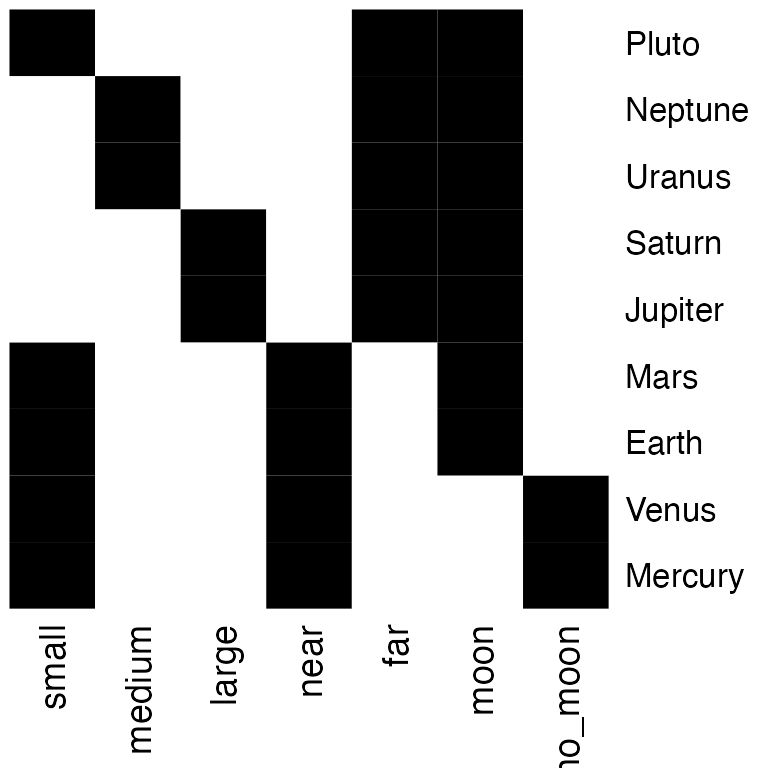
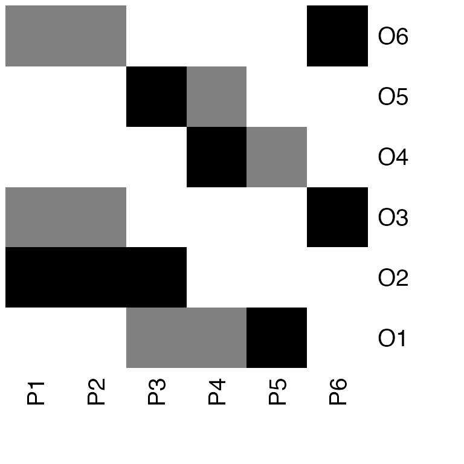
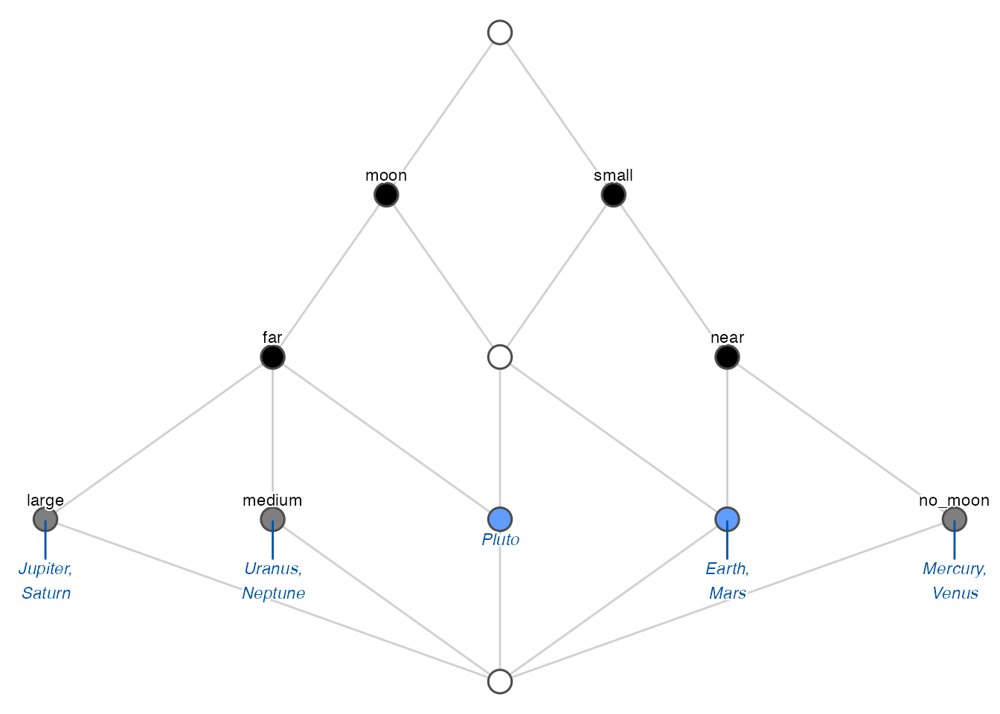

We are going to work with two datasets, a crisp one and a fuzzy one.
The classical (binary) dataset is the well-known planets formal context, presented in
Wille R (1982). “Restructuring Lattice Theory: An Approach Based on Hierarchies of Concepts.” In Ordered Sets, pp. 445–470. Springer.
<<<<<<< HEAD
knitr::kable(planets, format = "html", booktabs = TRUE)knitr::kable(planets, format = "html", booktabs = TRUE)| small | medium | large | near | far | moon | no_moon | |
|---|---|---|---|---|---|---|---|
| Mercury | 1 | 0 | 0 | 1 | 0 | 0 | 1 |
| Venus | 1 | 0 | 0 | 1 | 0 | 0 | 1 |
| Earth | 1 | 0 | 0 | 1 | 0 | 1 | 0 |
| Mars | 1 | 0 | 0 | 1 | 0 | 1 | 0 |
| Jupiter | 0 | 0 | 1 | 0 | 1 | 1 | 0 |
| Saturn | 0 | 0 | 1 | 0 | 1 | 1 | 0 |
| Uranus | 0 | 1 | 0 | 0 | 1 | 1 | 0 |
| Neptune | 0 | 1 | 0 | 0 | 1 | 1 | 0 |
| Pluto | 1 | 0 | 0 | 0 | 1 | 1 | 0 |
The other formal context is fuzzy and is defined by the following matrix I:
<<<<<<< HEAD
knitr::kable(I, format = "html", booktabs = TRUE)knitr::kable(I, format = "html", booktabs = TRUE)| P1 | P2 | P3 | P4 | P5 | P6 | |
|---|---|---|---|---|---|---|
| O1 | 0.0 | 0.0 | 0.5 | 0.5 | 1.0 | 0 |
| O2 | 1.0 | 1.0 | 1.0 | 0.0 | 0.0 | 0 |
| O3 | 0.5 | 0.5 | 0.0 | 0.0 | 0.0 | 1 |
| O4 | 0.0 | 0.0 | 0.0 | 1.0 | 0.5 | 0 |
| O5 | 0.0 | 0.0 | 1.0 | 0.5 | 0.0 | 0 |
| O6 | 0.5 | 0.5 | 0.0 | 0.0 | 0.0 | 1 |
The first step when using the fcaR package to analyze a formal context is to create an object of class FormalContext which will store all the information related to the context.
In our examples, we create two objects:
fc_planets <- FormalContext$new(planets)
fc_I <- FormalContext$new(I)Internally, the object stores information about whether the context is binary or the names of objects and attributes, which are taken from the rownames and colnames of the provided matrix.
Once created the FormalContext objects, we can print them or plot them as heatmaps (with functions print() and plot()):
print(fc_planets)
=======
Plotting, printing and latex-ing the FormalContext
Once created the FormalContext objects, we can print them or plot them as heatmaps (with functions print() and plot()):
print(fc_planets)
>>>>>>> 646172c6fcd1679fc5dd5069ed41387901db2ceb
#> FormalContext with 9 objects and 7 attributes.
#> small medium large near far moon no_moon
#> Mercury X X X
#> Venus X X X
#> Earth X X X
#> Mars X X X
#> Jupiter X X X
#> Saturn X X X
#> Uranus X X X
#> Neptune X X X
#> Pluto X X X
print(fc_I)
#> FormalContext with 6 objects and 6 attributes.
#> P1 P2 P3 P4 P5 P6
#> O1 0 0 0.5 0.5 1 0
#> O2 1 1 1 0 0 0
#> O3 0.5 0.5 0 0 0 1
#> O4 0 0 0 1 0.5 0
#> O5 0 0 1 0.5 0 0
#> O6 0.5 0.5 0 0 0 1
fc_planets$plot()

fc_I$plot()

Also, we can export the formal context as a LaTeX table:
fc_planets$to_latex()
#> \begin{table} \centering \begin{tabular}{lccccccc}
#> \toprule
#> & small & medium & large & near & far & moon & no_moon\\
#> \midrule
#> Mercury & $\times$ & & & $\times$ & & & $\times$\\
#> Venus & $\times$ & & & $\times$ & & & $\times$\\
#> Earth & $\times$ & & & $\times$ & & $\times$ & \\
#> Mars & $\times$ & & & $\times$ & & $\times$ & \\
#> Jupiter & & & $\times$ & & $\times$ & $\times$ & \\
#> Saturn & & & $\times$ & & $\times$ & $\times$ & \\
#> Uranus & & $\times$ & & & $\times$ & $\times$ & \\
#> Neptune & & $\times$ & & & $\times$ & $\times$ & \\
#> Pluto & $\times$ & & & & $\times$ & $\times$ & \\
#> \bottomrule
#> \end{tabular} \caption{\label{}} \end{table}
One can also create FormalContexts by importing RDS, CSV or CXT files directly:
# Read CSV
<<<<<<< HEAD
filename <- system.file("contexts", "airlines.csv",
=======
filename <- system.file("contexts", "airlines.csv",
>>>>>>> 646172c6fcd1679fc5dd5069ed41387901db2ceb
package = "fcaR")
fc1 <- FormalContext$new(filename)
fc1
#> FormalContext with 5 objects and 9 attributes.
#> Latin.America Europe Canada Asia.Pacific Middle.east
#> Air Canada X X X X X
#> Air New Zealand X X
#> Nippon Airways X X
#> Ansett Australia X
#> Austrian Airlines X X X X
#> Other attributes are: Africa, Mexico, Caribbean, USA
# Read CXT
filename <- system.file("contexts", "lives_in_water.cxt",
package = "fcaR")
fc2 <- FormalContext$new(filename)
fc2
#> FormalContext with 8 objects and 9 attributes.
#> needs water to live lives in water lives on land
#> fish leech X X
#> bream X X
#> frog X X X
#> dog X X
#> water weeds X X
#> reed X X X
#> bean X X
#> corn X X
#> Other attributes are: needs chlorophyll, dicotyledon, monocotyledon, can move,
#> has limbs, breast feedsWe can compute the dual formal context of a given one by using the dual() method:
fc_dual <- fc_planets$dual()
fc_dual
#> FormalContext with 7 objects and 9 attributes.
#> Mercury Venus Earth Mars Jupiter Saturn Uranus Neptune Pluto
#> small X X X X X
#> medium X X
#> large X X
#> near X X X X
#> far X X X X X
#> moon X X X X X X X
#> no_moon X XThe result is a FormalContext where attributes are now the objects of the previous formal context and viceversa.
The basic operation in FCA is the computation of closures given an attribute set, by using the two derivation operators, extent and intent.
The intent of a (probably fuzzy) set of objects is the set of their common attributes:
# Define a set of objects
S <- Set$new(attributes = fc_planets$objects)
S$assign(Earth = 1, Mars = 1)
S
#> {Earth, Mars}
# Compute the intent of S
fc_planets$intent(S)
#> {small, near, moon}Analogously, the extent of a set of attributes is the set of objects which possess all the attributes in the given set:
# Define a set of objects
S <- Set$new(attributes = fc_planets$attributes)
S$assign(moon = 1, large = 1)
S
#> {large, moon}
# Compute the extent of S
fc_planets$extent(S)
#> {Jupiter, Saturn}The composition of intent and extent is the closure of a set of attributes:
# Compute the closure of S
Sc <- fc_planets$closure(S)
Sc
#> {large, far, moon}This means that all planets which have the attributes moon and large also have far in common.
We can check whether a set is closed (that is, it is equal to its closure), using is_closed():
fc_planets$is_closed(S)
#> [1] FALSE
fc_planets$is_closed(Sc)
#> [1] TRUEAn interesting point when managing formal contexts is the ability to reduce the context, removing redundancies, while retaining all the knowledge. This is accomplished by two functions: clarify(), which removes duplicated attributes and objects (columns and rows in the original matrix); and reduce(), which uses closures to remove dependent attributes, but only on binary formal contexts. The resulting FormalContext is equivalent to the original one in both cases.
fc_planets$reduce(TRUE)
#> FormalContext with 5 objects and 7 attributes.
#> small medium large near far moon no_moon
#> Pluto X X X
#> [Mercury, Venus] X X X
#> [Earth, Mars] X X X
#> [Jupiter, Saturn] X X X
#> [Uranus, Neptune] X X X
fc_I$clarify(TRUE)
#> FormalContext with 5 objects and 5 attributes.
#> P3 P4 P5 P6 [P1, P2]
#> O1 0.5 0.5 1 0 0
#> O2 1 0 0 0 1
#> O4 0 1 0.5 0 0
#> O5 1 0.5 0 0 0
#> [O3, O6] 0 0 0 1 0.5Note that merged attributes or objects are stored in the new formal context by using squared brackets to unify them, e.g. [Mercury, Venus].
The function to extract the canonical basis of implications and the concept lattice is find_implications(). Its use is to store a ConceptLattice and an ImplicationSet objects internally in the FormalContext object after running the NextClosure algorithm.
It can be used both for binary and fuzzy formal contexts, resulting in binary or fuzzy concepts and implications:
fc_planets$find_implications()
fc_I$find_implications()We can inspect the results as:
# Concepts
fc_planets$concepts
#> A set of 12 concepts:
#> 1: ({Mercury, Venus, Earth, Mars, Jupiter, Saturn, Uranus, Neptune, Pluto}, {})
#> 2: ({Earth, Mars, Jupiter, Saturn, Uranus, Neptune, Pluto}, {moon})
#> 3: ({Jupiter, Saturn, Uranus, Neptune, Pluto}, {far, moon})
#> 4: ({Jupiter, Saturn}, {large, far, moon})
#> 5: ({Uranus, Neptune}, {medium, far, moon})
#> 6: ({Mercury, Venus, Earth, Mars, Pluto}, {small})
#> 7: ({Earth, Mars, Pluto}, {small, moon})
#> 8: ({Pluto}, {small, far, moon})
#> 9: ({Mercury, Venus, Earth, Mars}, {small, near})
#> 10: ({Mercury, Venus}, {small, near, no_moon})
#> 11: ({Earth, Mars}, {small, near, moon})
#> 12: ({}, {small, medium, large, near, far, moon, no_moon})
# Implications
fc_planets$implications
#> Implication set with 10 implications.
#> Rule 1: {no_moon} -> {small, near}
#> Rule 2: {far} -> {moon}
#> Rule 3: {near} -> {small}
#> Rule 4: {large} -> {far, moon}
#> Rule 5: {medium} -> {far, moon}
#> Rule 6: {medium, large, far, moon} -> {small, near, no_moon}
#> Rule 7: {small, near, moon, no_moon} -> {medium, large, far}
#> Rule 8: {small, near, far, moon} -> {medium, large, no_moon}
#> Rule 9: {small, large, far, moon} -> {medium, near, no_moon}
#> Rule 10: {small, medium, far, moon} -> {large, near, no_moon}Once we have computed the concepts, we can build the standard context (J, M, \(\le\)), where J is the set of join-irreducible concepts and M are the meet-irreducible ones. Join and meet are another name for supremum and infimum operations in the concept lattice.
The function standardize() works for all FormalContext where the concept lattice has been found, and it produces a new FormalContext object:
fc_planets$standardize()
#> FormalContext with 5 objects and 7 attributes.
#> M1 M2 M3 M4 M5 M6 M7
#> J1 X X X
#> J2 X X X
#> J3 X X X
#> J4 X X X
#> J5 X X X
fc_I$standardize()
#> FormalContext with 9 objects and 9 attributes.
#> M1 M2 M3 M4 M5 M6 M7 M8 M9
#> J1 X X X
#> J2 X X X X
#> J3 X X X X
#> J4 X X X
#> J5 X X X X
#> J6 X X X X X X
#> J7 X X
#> J8 X X X
#> J9 X X X XNote that now objects are named J1, J2… and attributes are M1, M2…, from join and meet.
A FormalContext is saved in RDS format using its own save() method, which is more efficient than the base saveRDS() and readRDS().
A FormalContext is saved in RDS format using its own save() method, which is more efficient than the base saveRDS() and readRDS().
fc$save(filename = "./fc.rds")In order to load a previously saved FormalContext, it suffices to do:
fc2 <- FormalContext$new("./fc.rds")In this case, fc and fc2 contain the same information.
We are going to use the previously computed concept lattices for the two FormalContext objects.
The concept lattice can be plotted using a Hasse diagram and the function plot() inside the ConceptLattice component:
The concept lattice can be plotted using a Hasse diagram and the function plot() inside the ConceptLattice component:
fc_planets$concepts$plot()
fc_I$concepts$plot()If one desires to get the list of concepts printed, or in \(\LaTeX\) format, just:
# Printing
fc_planets$concepts
#> A set of 12 concepts:
#> 1: ({Mercury, Venus, Earth, Mars, Jupiter, Saturn, Uranus, Neptune, Pluto}, {})
#> 2: ({Earth, Mars, Jupiter, Saturn, Uranus, Neptune, Pluto}, {moon})
#> 3: ({Jupiter, Saturn, Uranus, Neptune, Pluto}, {far, moon})
#> 4: ({Jupiter, Saturn}, {large, far, moon})
#> 5: ({Uranus, Neptune}, {medium, far, moon})
#> 6: ({Mercury, Venus, Earth, Mars, Pluto}, {small})
#> 7: ({Earth, Mars, Pluto}, {small, moon})
#> 8: ({Pluto}, {small, far, moon})
#> 9: ({Mercury, Venus, Earth, Mars}, {small, near})
#> 10: ({Mercury, Venus}, {small, near, no_moon})
#> 11: ({Earth, Mars}, {small, near, moon})
#> 12: ({}, {small, medium, large, near, far, moon, no_moon})
# LaTeX
fc_planets$concepts$to_latex()
#> \begin{longtable}{lll}
#> 1: &$\left(\,\ensuremath{\left\{\mathrm{Mercury},\, \mathrm{Venus},\, \mathrm{Earth},\, \mathrm{Mars},\, \mathrm{Jupiter},\, \mathrm{Saturn},\, \mathrm{Uranus},\, \mathrm{Neptune},\, \mathrm{Pluto}\right\}},\right.$&$\left.\ensuremath{\varnothing}\,\right)$\\
#> 2: &$\left(\,\ensuremath{\left\{\mathrm{Earth},\, \mathrm{Mars},\, \mathrm{Jupiter},\, \mathrm{Saturn},\, \mathrm{Uranus},\, \mathrm{Neptune},\, \mathrm{Pluto}\right\}},\right.$&$\left.\ensuremath{\left\{\mathrm{moon}\right\}}\,\right)$\\
#> 3: &$\left(\,\ensuremath{\left\{\mathrm{Jupiter},\, \mathrm{Saturn},\, \mathrm{Uranus},\, \mathrm{Neptune},\, \mathrm{Pluto}\right\}},\right.$&$\left.\ensuremath{\left\{\mathrm{far},\, \mathrm{moon}\right\}}\,\right)$\\
#> 4: &$\left(\,\ensuremath{\left\{\mathrm{Jupiter},\, \mathrm{Saturn}\right\}},\right.$&$\left.\ensuremath{\left\{\mathrm{large},\, \mathrm{far},\, \mathrm{moon}\right\}}\,\right)$\\
#> 5: &$\left(\,\ensuremath{\left\{\mathrm{Uranus},\, \mathrm{Neptune}\right\}},\right.$&$\left.\ensuremath{\left\{\mathrm{medium},\, \mathrm{far},\, \mathrm{moon}\right\}}\,\right)$\\
#> 6: &$\left(\,\ensuremath{\left\{\mathrm{Mercury},\, \mathrm{Venus},\, \mathrm{Earth},\, \mathrm{Mars},\, \mathrm{Pluto}\right\}},\right.$&$\left.\ensuremath{\left\{\mathrm{small}\right\}}\,\right)$\\
#> 7: &$\left(\,\ensuremath{\left\{\mathrm{Earth},\, \mathrm{Mars},\, \mathrm{Pluto}\right\}},\right.$&$\left.\ensuremath{\left\{\mathrm{small},\, \mathrm{moon}\right\}}\,\right)$\\
#> 8: &$\left(\,\ensuremath{\left\{\mathrm{Pluto}\right\}},\right.$&$\left.\ensuremath{\left\{\mathrm{small},\, \mathrm{far},\, \mathrm{moon}\right\}}\,\right)$\\
#> 9: &$\left(\,\ensuremath{\left\{\mathrm{Mercury},\, \mathrm{Venus},\, \mathrm{Earth},\, \mathrm{Mars}\right\}},\right.$&$\left.\ensuremath{\left\{\mathrm{small},\, \mathrm{near}\right\}}\,\right)$\\
#> 10: &$\left(\,\ensuremath{\left\{\mathrm{Mercury},\, \mathrm{Venus}\right\}},\right.$&$\left.\ensuremath{\left\{\mathrm{small},\, \mathrm{near},\, \mathrm{no_moon}\right\}}\,\right)$\\
#> 11: &$\left(\,\ensuremath{\left\{\mathrm{Earth},\, \mathrm{Mars}\right\}},\right.$&$\left.\ensuremath{\left\{\mathrm{small},\, \mathrm{near},\, \mathrm{moon}\right\}}\,\right)$\\
#> 12: &$\left(\,\ensuremath{\varnothing},\right.$&$\left.\ensuremath{\left\{\mathrm{small},\, \mathrm{medium},\, \mathrm{large},\, \mathrm{near},\, \mathrm{far},\, \mathrm{moon},\, \mathrm{no_moon}\right\}}\,\right)$\\
#> \end{longtable}For a ConceptLattice, one may want to retrieve particular concepts, using a subsetting as in R:
fc_planets$concepts[2:3]
#> ({Earth, Mars, Jupiter, Saturn, Uranus, Neptune, Pluto}, {moon})
#> ({Jupiter, Saturn, Uranus, Neptune, Pluto}, {far, moon})Or get all the extents and all the intents of all concepts, as sparse matrices:
fc_planets$concepts$extents()
fc_planets$concepts$intents()The support of concepts can be computed using the function support():
The support of concepts can be computed using the function support():
fc_planets$concepts$support()
#> [1] 1.0000000 0.7777778 0.5555556 0.2222222 0.2222222 0.5555556 0.3333333
#> [8] 0.1111111 0.4444444 0.2222222 0.2222222 0.0000000When the concept lattice is too large, it can be useful in certain occasions to just work with a sublattice of the complete lattice. To this end, we use the sublattice() function.
For instance, to build the sublattice of those concepts with support greater than 0.5, we can do:
# Get the index of those concepts with support
# greater than the threshold
idx <- which(fc_I$concepts$support() > 0.2)
# Build the sublattice
sublattice <- fc_I$concepts$sublattice(idx)
sublattice
#> A set of 13 concepts:
#> 1: ({O1, O2, O3, O4, O5, O6}, {})
#> 2: ({O1, O4, O5}, {P4 [0.5]})
#> 3: ({O1, O4}, {P4 [0.5], P5 [0.5]})
#> 4: ({O1, O2, O5}, {P3 [0.5]})
#> 5: ({O1, O5}, {P3 [0.5], P4 [0.5]})
#> 6: ({O1}, {P3 [0.5], P4 [0.5], P5})
#> 7: ({O1 [0.5], O2, O5}, {P3})
#> 8: ({O1 [0.5], O5}, {P3, P4 [0.5]})
#> 9: ({O1 [0.5]}, {P3, P4, P5})
#> 10: ({O2, O3, O6}, {P1 [0.5], P2 [0.5]})
#> 11: ({O3, O6}, {P1 [0.5], P2 [0.5], P6})
#> 12: ({O2}, {P1, P2, P3})
#> 13: ({}, {P1, P2, P3, P4, P5, P6})And we can plot just the sublattice:
sublattice$plot()It may be interesting to use the notions of subconcept and superconcept. Given a concept, we can compute all its subconcepts and all its superconcepts:
# The fifth concept
C <- fc_planets$concepts[5][[1]]
C
#> ({Uranus, Neptune}, {medium, far, moon})
# Its subconcepts:
fc_planets$concepts$subconcepts(C)
#> ({Uranus, Neptune}, {medium, far, moon})
#> ({}, {small, medium, large, near, far, moon, no_moon})
# And its superconcepts:
fc_planets$concepts$superconcepts(C)
<<<<<<< HEAD
#> ({Mercury, Venus, Earth, Mars, Jupiter, Saturn, Uranus, Neptune, Pluto}, {})
#> ({Earth, Mars, Jupiter, Saturn, Uranus, Neptune, Pluto}, {moon})
#> ({Jupiter, Saturn, Uranus, Neptune, Pluto}, {far, moon})
#> ({Uranus, Neptune}, {medium, far, moon})Also, we can define infimum and supremum of a set of concepts as the greatest common subconcept of all the given concepts, and the lowest common superconcept of them, and can be computed by:
# A list of concepts
C <- fc_planets$concepts[5:7]
C
#> ({Uranus, Neptune}, {medium, far, moon})
#> ({Mercury, Venus, Earth, Mars, Pluto}, {small})
#> ({Earth, Mars, Pluto}, {small, moon})
# Supremum of the concepts in C
fc_planets$concepts$supremum(C)
#> ({Mercury, Venus, Earth, Mars, Jupiter, Saturn, Uranus, Neptune, Pluto}, {})
# Infimum of the concepts in C
fc_planets$concepts$infimum(C)
<<<<<<< HEAD
#> ({}, {small, medium, large, near, far, moon, no_moon})Also irreducible elements with respect to join (supremum) and meet (infimum) can be computed for a given concept lattice:
fc_planets$concepts$join_irreducibles()
#> ({Jupiter, Saturn}, {large, far, moon})
#> ({Uranus, Neptune}, {medium, far, moon})
#> ({Pluto}, {small, far, moon})
#> ({Mercury, Venus}, {small, near, no_moon})
#> ({Earth, Mars}, {small, near, moon})
fc_planets$concepts$meet_irreducibles()
#> ({Earth, Mars, Jupiter, Saturn, Uranus, Neptune, Pluto}, {moon})
#> ({Jupiter, Saturn, Uranus, Neptune, Pluto}, {far, moon})
#> ({Jupiter, Saturn}, {large, far, moon})
#> ({Uranus, Neptune}, {medium, far, moon})
#> ({Mercury, Venus, Earth, Mars, Pluto}, {small})
#> ({Mercury, Venus, Earth, Mars}, {small, near})
#> ({Mercury, Venus}, {small, near, no_moon})This are the concepts used to build the standard context, mentioned above.